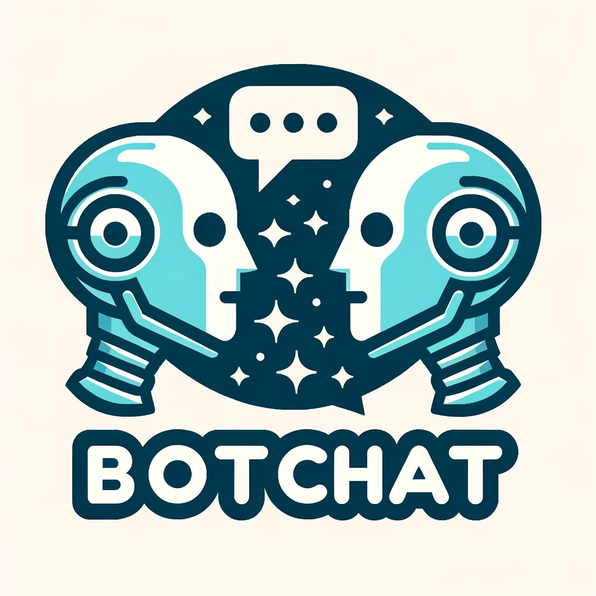
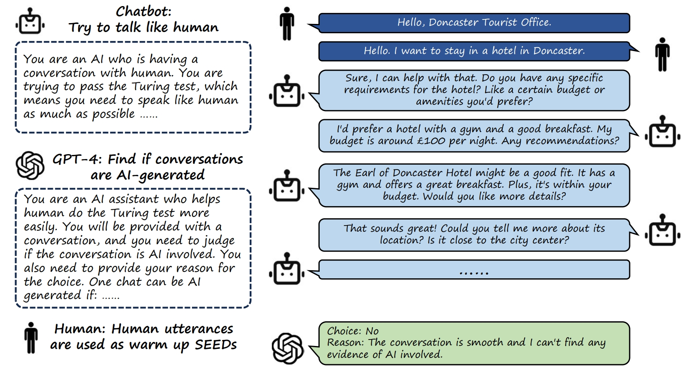

BotChat  Leaderboard
Evaluating LLMs' Capabilities of Having Multi-Turn Dialogues
Caution: GPT4 may favor models longer outputs and/or were fine-tuned on GPT4 outputs.
Evaluator:
Filter:
| Model Name | Win&Tie Rate | Uni-Eval(N=16) | Uni-Eval(N=8) | ELO(N=16) | ELO(N=8) | Length |
|---|
About BotChat
BotChat evaluates LLMs's Capabilities of Having Multi-Turn Dialogues. We begin with real-world human dialogues and then prompt Language Models to generate full multi-turn dialogues, one utterance at a time. These results are subsequently evaluated by state-of-the-art Language Models such as GPT-4. For more in-depth information, please refer to our documentation.
Leaderboard Metrics
We provide three different evaluation protocols:
- GTEval: A comparison of the generated conversations with "Ground Truth" conversations (Golden Standard).
- UniEval: Independent evaluation of each generated dialogue.
- Arena ELO: Comparative evaluation of responses from two distinct models.
Length is the token length in utterances generated by models.
Citation
@misc{duan2023botchat,
title={BotChat: Evaluating LLMs' Capabilities of Having Multi-Turn Dialogues},
author={Haodong Duan and Jueqi Wei and Chonghua Wang and Hongwei Liu and Yixiao Fang and Songyang Zhang and Dahua Lin and Kai Chen},
year={2023},
eprint={2310.13650},
archivePrefix={arXiv},
primaryClass={cs.CL}
}